ប្រព័ន្ធគិតលុយសម្រាប់ហាងលក់រាយ
DIGITECHKH
POS System
លក់លឿន គ្រប់គ្រង Stock ច្បាស់ លុយមិនបាត់បង់
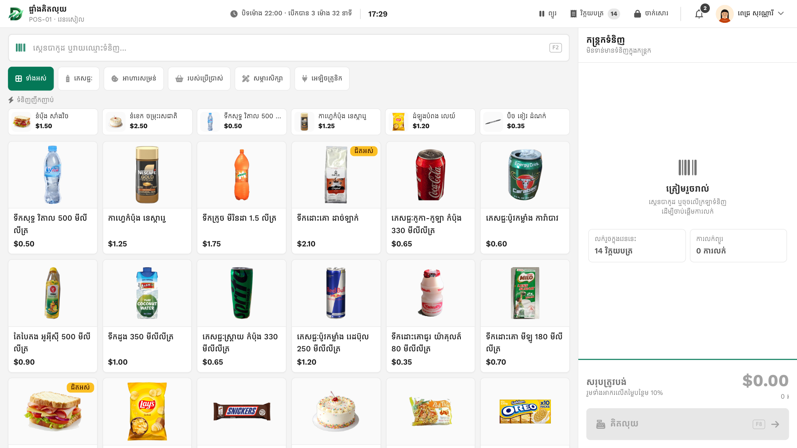
ការបង្ហាញទូទៅ · Overviewអភិវឌ្ឍដោយ DIGITECHKH
លក់លឿន គ្រប់គ្រង Stock ច្បាស់ លុយមិនបាត់បង់

មិនដឹងថាអ្នកណាខ្វះ ឬលើស នៅពេលបិទ Shift
ទំនិញអស់មិនដឹងខ្លួន ឬបាត់បង់ដោយគ្មានមូលហេតុ
Void វិក្កយបត្រ និងបញ្ចុះតម្លៃ ដោយគ្មានអ្នកអនុម័ត
ដឹងតែចំនួនលក់ តែមិនដឹងចំណេញពិតប្រាកដ
ដុល្លារ និងរៀល ត្រូវគណនាអាប់ដូរដោយដៃ
ត្រូវរង់ចាំចុងខែ ទើបដឹងស្ថានភាពហាង
DIGITECHKH POS ដោះស្រាយទាំងអស់នេះ ក្នុងប្រព័ន្ធតែមួយ
អេក្រង់លក់ងាយស្រួល ទទួលសាច់ប្រាក់ និង KHQR បើក Shift និងបិទ Shift
អនុម័ត Void បញ្ចុះតម្លៃ ត្រួតពិនិត្យលុយ Stock និងកាលវិភាគ
ប្រាក់ចំណេញ តម្លៃ Stock បុគ្គលិក តម្លៃលក់ និង Audit Log
ម្នាក់ៗឃើញតែអ្វីដែលខ្លួនត្រូវការ Owner ចូលមើលតួនាទីផ្សេងបានដោយចុចតែម្តង
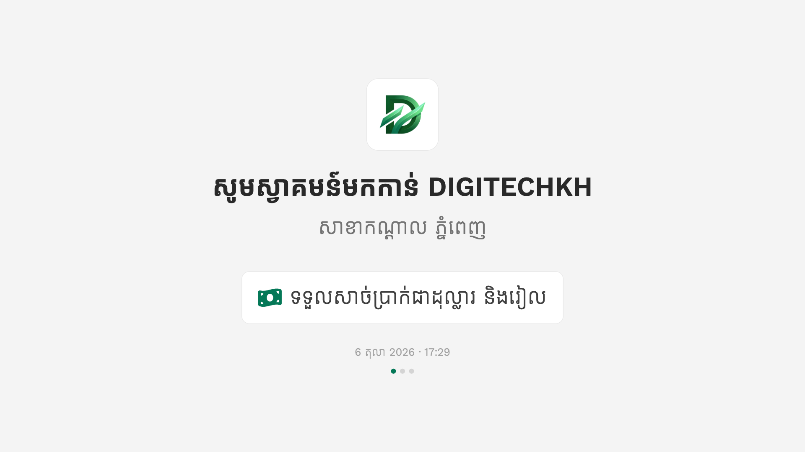
រាប់លុយចាប់ផ្តើម (Float) ហើយ Manager បញ្ជាក់
រាល់ការលក់កត់ត្រាតាម Shift និងបញ្ជរ
ផ្ទេរលុយលើសចូលទូដែក កុំឲ្យថតមានលុយច្រើនពេក
រាប់លុយដោយមិនមើលចំនួនរំពឹងទុក រួចបោះពុម្ព Z-Report
មួយបញ្ជរ មាន Cashier តែម្នាក់ក្នុងមួយពេល
រាប់ដោយឡែកពីគ្នា ហើយប្រៀបធៀបជាមួយចំនួនរំពឹងទុក
ខុសគ្នាលើសកំណត់ ត្រូវមានកំណត់ចំណាំពី Manager
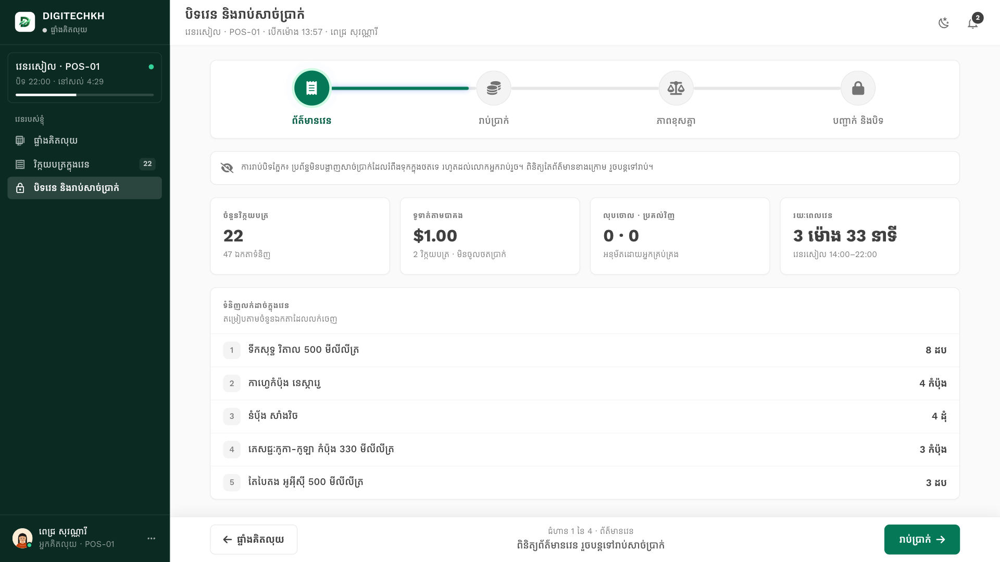
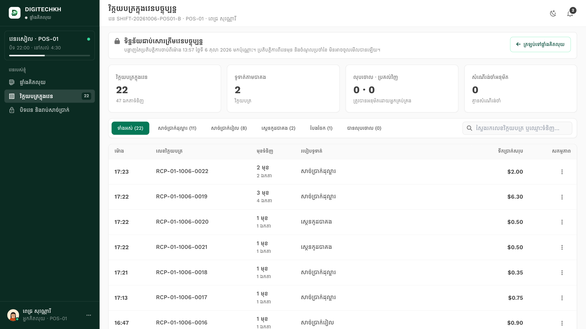
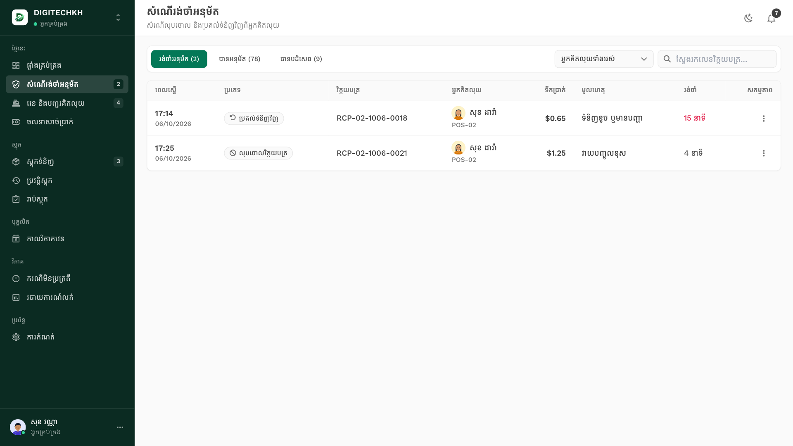
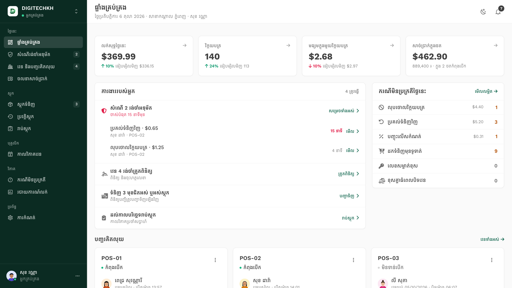
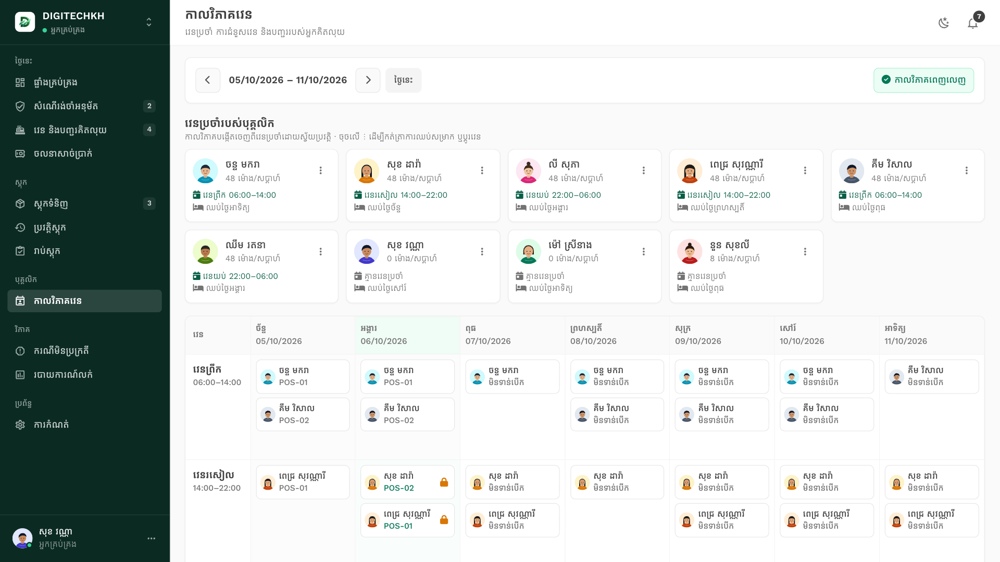
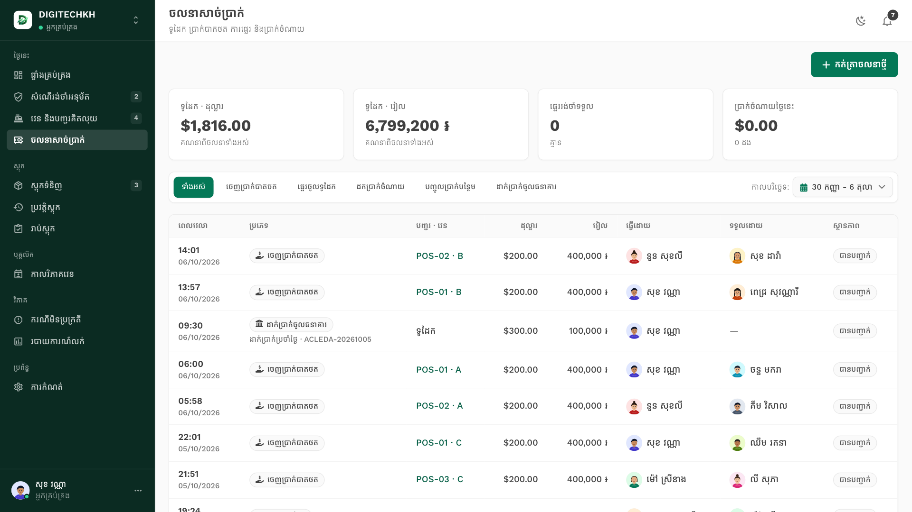
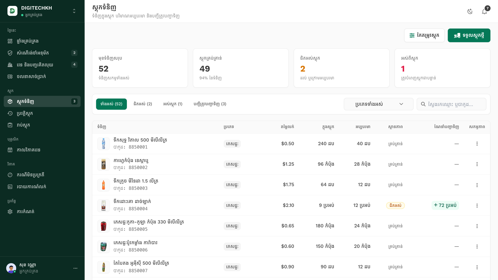
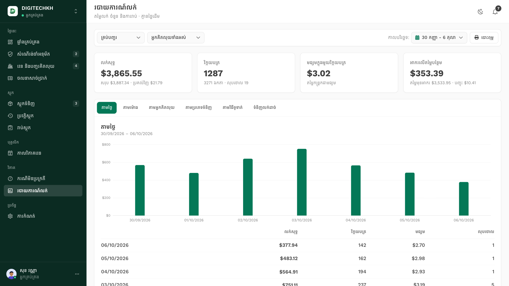
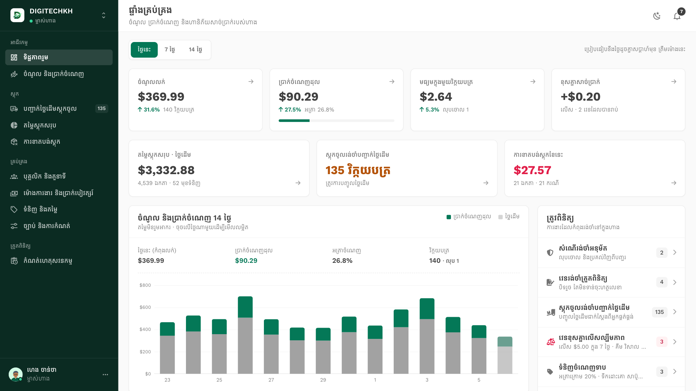
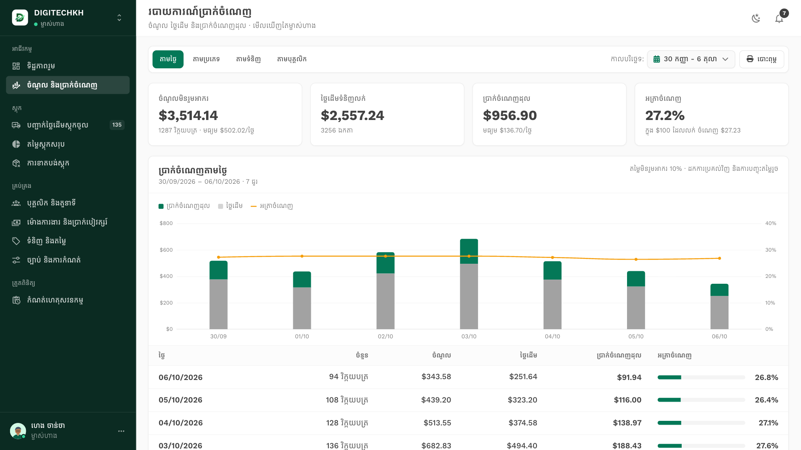
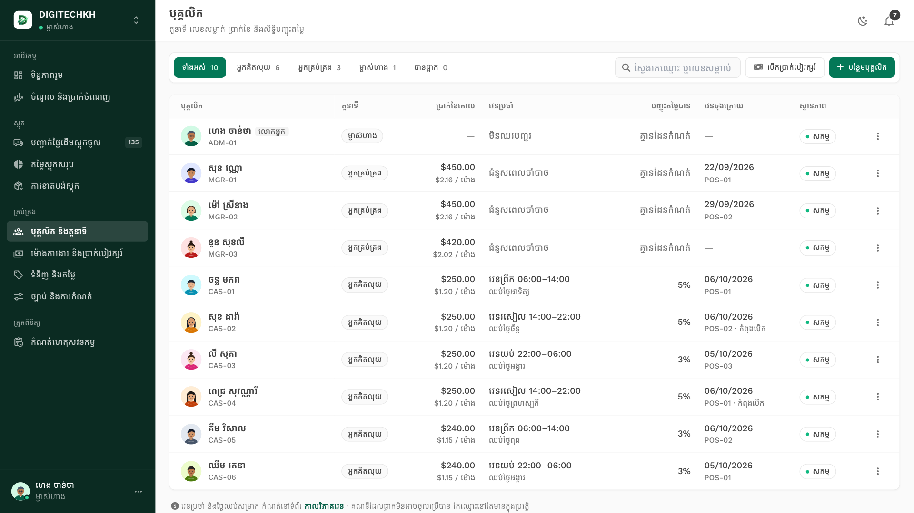
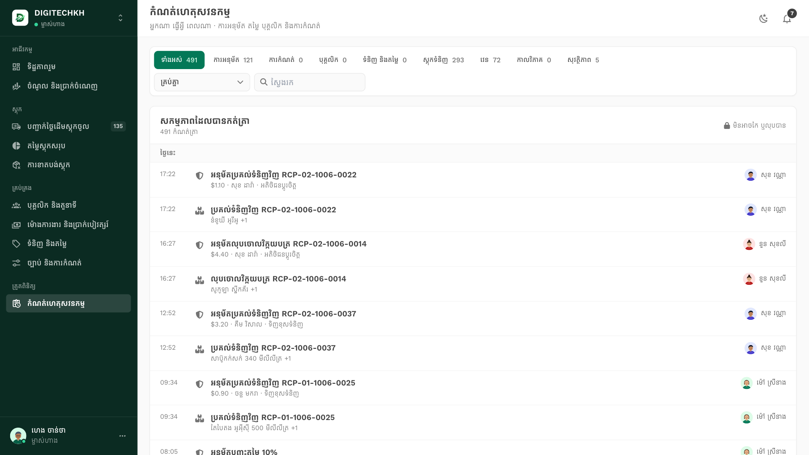
| សកម្មភាព | Cashier | Manager | Owner |
|---|---|---|---|
| លក់ និងទទួលលុយ | បាន | បាន | — |
| បញ្ចុះតម្លៃលើសកំណត់ | មិនបាន | បាន (PIN) | បាន |
| អនុម័ត Void និង Refund | ស្នើ | បាន | បាន |
| ត្រួតពិនិត្យ Shift ដែលបិទ | មិនបាន | បាន | បាន |
| មើលតម្លៃដើម និងប្រាក់ចំណេញ | មិនបាន | មិនបាន | បាន |
| កែតម្លៃលក់ និងបុគ្គលិក | មិនបាន | មិនបាន | បាន |
Login ដោយលេខទូរស័ព្ទ ឬ Email និងពាក្យសម្ងាត់ · ចាក់សោ 1 នាទី បើខុស 5 ដង
ពាក្យសាមញ្ញដែលបុគ្គលិកប្រើនៅតុគិតលុយ
អត្រាប្តូរប្រាក់ប្រចាំថ្ងៃ
Desktop Tablet និងទូរស័ព្ទ មាន Light និង Dark Mode
សម្រាប់ប៉ះលើអេក្រង់ និងគ្រាប់ចុចរហ័ស
Receipt 80mm និង Z-Report ទំហំ A4
ដំណើរការលើ Browser
សាកល្បងជាមួយទិន្នន័យគំរូ
ទំនិញ តម្លៃ និងបុគ្គលិក
បុគ្គលិកទាំងអស់ ត្រៀមប្រើ